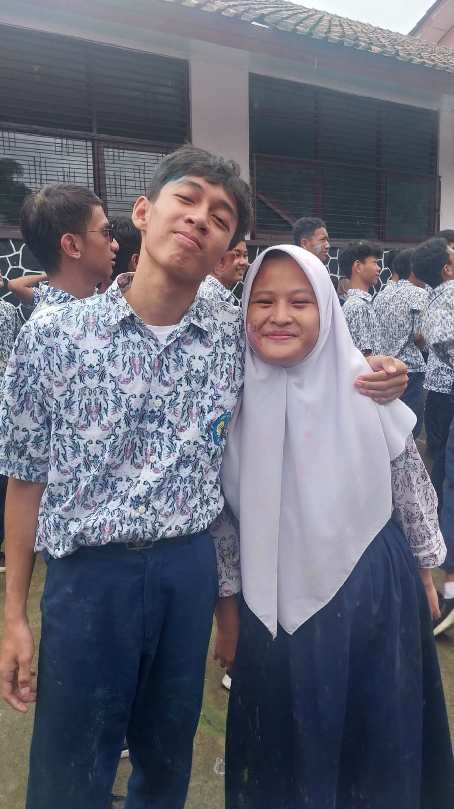
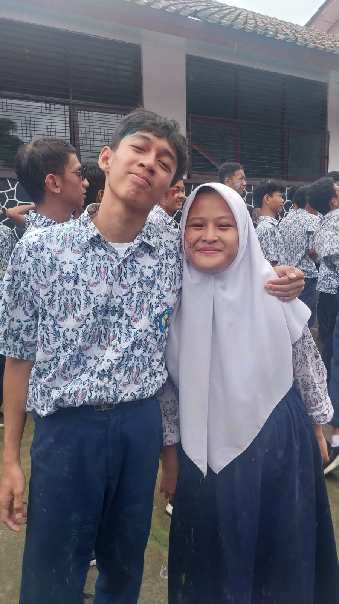

💌
Selamat Ulang Tahun yang kee 17!!
Semoga di usia yang kian bertambah, langkahmu selalu dimudahkan dan hatimu tetap ringan menjalani hari.
Kata orang Air tenang Menghanyutkan, dan acil rasa itu ada di ala, ga banyak bicara, tapi kehadirannya tetap terasa.
Acil mungkin gapandai merangkai kata, tapi acil tulus berharap ala selalu sehat,
selalu dikelilingi hal baik, dan tetap menjadi ala yang sekarang dengan semakin banyak perubahan dan kabar baik,
Dan semoga semua yang sedang ala usahakan sejauh ini dapat berbuah manis dikemudian hari.
Ada pepatah "Dimana Ada Rasa Disitu Ada Doa" dan khusus hari ini, doa itu sepenuhnya buat ala,
Semoga disetiap langkah ala selalu ditemani kebahagiaan, dan semoga selalu ada acil disampingmu, sekedar menemani, tanpa perlu banyak janji
Selamat Bertambah Usia,
semoga hari ini dan hari-hari setelahnya selalu hangat untukmu.

 
